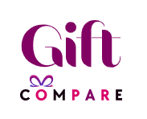

Group project

Group Project
Group Project
Click on the image or its link to check the Group Project code
Link to live website:Gift Compare
The team developed this website from the ground up, applying the knowledge gained from the SheCodes Plus program.
Through client interviews, they defined the Minimum Viable Product (MVP) requirements and features.
Agile methodologies were applied.
More info can be found in theGitHubrepository.